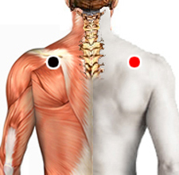

Mycoplasma pneumoniae
Espina del homóplato - Espina homóplato
pectoral - pectoral
pectoral - pulmón
aquiles inferior - aquiles inf.
temporoccipital - temporoccipital
uretra - uretero

Generalidades:
Síntomas respiratorios: Tos persistente, congestión nasal, treaqueobronquitis, neumonía, odinofagia, disnea, fiebre, malestar general.
También conocido como Agente de Eaton, por el investigador que lo descubrió. Es un patógeno que infecta exclusivamente a los humanos, especializado en adherirse a las paredes del aparato respiratorio. La infección se manifiesta como traqueobronquitis y neumonía acompañada de febrícula, malestar, cefalea.
Por su estructura y genética es más parecido a una mitocondria que a una bacteria ya que carece de muchos procesos metabólicos por lo que es un parásito obligado; por lo mismo, en un principio, los investigadores confundieron este agente con un virus.
Transmisión:
Por pequeñas gotas en saliva, por contacto cercano con el enfermo. Más común en niños y jóvenes en edad escolar.